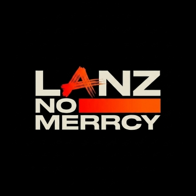

Hi, saya
Seorang |
Lulusan SMA dengan minat di bidang Teknologi Informasi, Web Development, dan Digital Media. Berpengalaman dalam penjualan online, pembuatan konten digital, serta pengembangan website sederhana, dengan semangat untuk terus belajar dan berkembang.

Saya adalah lulusan SMA yang memiliki minat besar di bidang Teknologi Informasi, khususnya modifikasi aplikasi dan basic pemrograman. Perjalanan saya dimulai dari rasa ingin tahu tentang bagaimana sebuah aplikasi dijalankan, hingga akhirnya saya mulai mempelajari berbagai teknologi dan membangun proyek secara mandiri.
Selain modifikasi aplikasi, saya juga tertarik pada dunia Cyber Security, konten digital, penjualan digital, dan teknologi digital. Saya senang mempelajari hal-hal baru, mengembangkan keterampilan melalui proyek nyata, serta terus meningkatkan kemampuan untuk mempersiapkan karier di bidang IT.
Teknologi dan tools yang saya gunakan dalam project-project saya.
Kumpulan project yang pernah saya kerjakan. Klik filter untuk melihat berdasarkan kategori.
sertifikat yang saya peroleh dari kegiatan akademik, pelatihan, dan pengembangan diri.
Rekam jejak pendidikan, pengalaman organisasi, dan pencapaian saya.
Terbuka untuk diskusi, peluang kerja, magang, maupun pertanyaan seputar pengalaman dan proyek yang saya kerjakan.